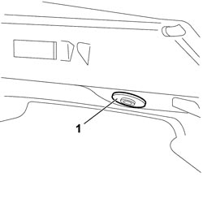
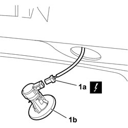

5580C66 <x>SWITCH FOR DEACTIVATING REAR SIDE AIR BAGS - R&R</x>
- Path
- Procedures > 55 ELECTRICAL EQUIPMENT > 5580 SPECIAL ACCESSORIES > 5580C AIR BAG SYSTEM > 5580C66 <x>SWITCH FOR DEACTIVATING REAR SIDE AIR BAGS - R&R</x>
- Kind
- repair procedure (removal / refitting; the operation number is the code)
- Applies to
- all engines; all production periods
- Interactive page
- https://sloeber94.github.io/elrnDB-fCrm/en/#/194000813
Applies to: all engines; all production periods
- Turn the ignition key to the OFF position and extract it.
- Disconnect the negative and positive battery terminals and insulate them.
- Wait for 10 minutes before continuing.
Description | Connector | |
|---|---|---|
BATTERY |
Applies to: all engines; all production periods
 Removing
Removing
 Refitting
Refitting1. Use the appropriate tool to prise up the rear seat side back deactivation switch/lock from the right upper luggage compartment trim and carefully remove from its seat.
Tool | Description | Function | Validity |
|---|---|---|---|
1878077000 | Knife | Retainer removal |

Applies to: all engines; all production periods
1. Disconnect electrical connection (1a) from the rear seat side back deactivation switch/lock (1b) and remove from the vehicle.
Description | Connector | |
|---|---|---|
1a | REAR AIR BAG DEACTIVATION |

Applies to: all engines; all production periods
Refitting
Removing- Connect the electrical connection to the rear seat side back deactivation switch/lock.
Description | Connector | |
|---|---|---|
REAR AIR BAG DEACTIVATION |
- Position the rear seat side back deactivation switch/lock in its seat on the trim and fit, pressing on the anchorage points.
- Connect the negative and positive battery terminals.
Description | Connector | |
|---|---|---|
BATTERY |
- Check the operation of the system using the Examiner.